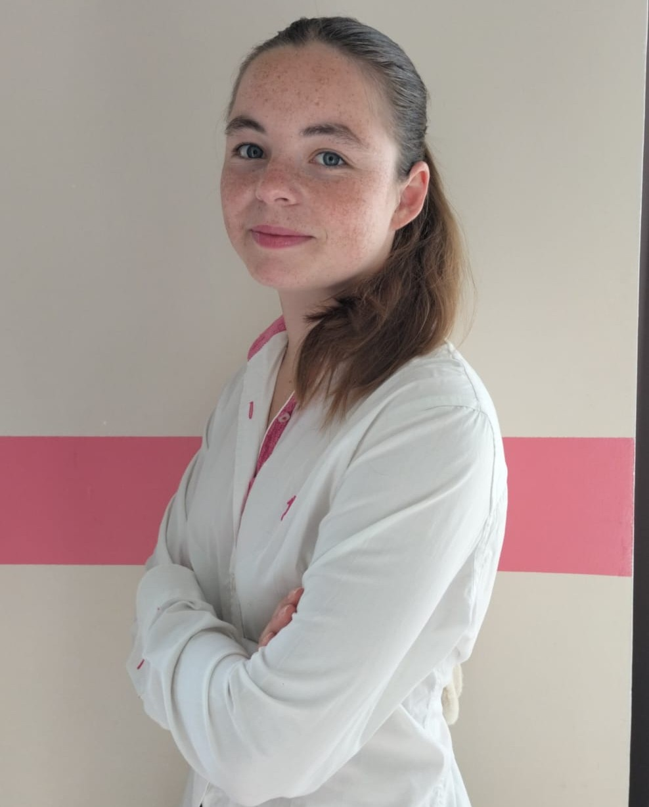

À propos
Je m'appelle Victoria Biard, née à Bordeaux. Je suis créative, optimiste, persévérante et curieuse. J'accorde beaucoup d'importance à la solidarité, à la bienveillance, à l'écoute et à l'honnêteté.

Étudiante en communication à l'EFAP Bordeaux. Créative, curieuse et passionnée par la communication, j'aime donner vie aux idées à travers des projets concrets, des événements et des expériences humaines.

Je m'appelle Victoria Biard, née à Bordeaux. Je suis créative, optimiste, persévérante et curieuse. J'accorde beaucoup d'importance à la solidarité, à la bienveillance, à l'écoute et à l'honnêteté.
Premières années scolaires marquées par l'apprentissage et le développement personnel.
Une période qui m'a permis de construire mon projet professionnel et de développer de nombreuses compétences.
Formation en communication, événementiel, marketing et création de contenu.
Je suis toujours ouverte à de nouvelles opportunités et collaborations créatives.
07 49 89 84 40